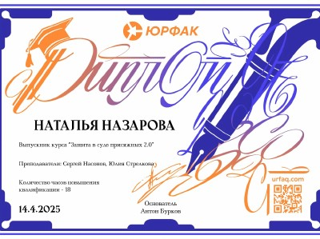

Опыт и специализация
Регистрационный номер 50/2021 в реестре адвокатов Московской области.
Стаж адвокатской деятельности свыше 23 лет.
Специализация:
Защита по уголовным делам
- Преступления против жизни и здоровья – ст. 105, 111, 112 УК РФ;
- Преступления против половой неприкосновенности – ст. 132, 133, 134, 135 УК РФ;
- Преступления против собственности - ст. 159, 161, 162, 163 УК РФ;
- Защита в Суде присяжных по уголовным делам тяжких категорий.


Принимала участие в следующих Телепроектах:
- Первый канал: участие в проектах «Федеральный судья» и «Право на защиту»
- Участие в повторе на «Пятом канале» проектов «Федеральный судья» и «Право на защиту»
- Участие в проекте «Суд присяжных»
- Участие в качестве эксперта ОРТ программа"Отражение»
- Участие в качестве эксперта программа "Мужское и женское»
в качестве эксперта в программах:
- На ОТР «Декриминализация семейного насилия может привести к тому, что каждый будет понимать – "немножко можно"
- На ОТР « О том, как добиться погашения долгов по зарплате»
- На 1-м Канале «МУЖСКОЕ и ЖЕНСКОЕ»
Адвокат Назарова Н. в программе «Федеральный судья» июнь 2020г.
Защита по делам ст. 132-135 УК РФ.
Успешная практика адвоката
Обвинение в покушении на незаконный сбыт психотропного вещества, группой лиц по предварительному сговору с использованием электронных и информационно-телекоммуникационных сетей в значительном размере.
Определение Судебной коллегии по уг/делам 2 кассационного суда, преступление переквалифицировано с ч.3 ст. 30 п.п. «а,б» ч.3 ст. 228.1 УК РФ на ч.1 ст. 228 УК РФ, обвиняемый освобожден из под стражи.
Адвокат добился для обвиняемого по ч.1 ст 135 УК наказания в виде штрафа.
В ходе судебного слушания по уголовному делу, была изменена мера пресечения на подписку о невыезде и произведет зачет наказания с запрета определенных действий.
Дело слушалось в Мещанском районном суде Москвы.
Адвокат добилась для осужденного по ч.4 ст.132 УК РФ смягчения приговора в апелляционном порядке.
Благодаря квалифицированной работе адвоката, приговор, вынесенный в отношении осуждённого по ч. 4 ст. 132 УК РФ, был смягчён в апелляционном порядке: суд заменил наказание на меры медицинского характера и отменил меру пресечения в виде заключения под стражу. Такой подход позволил учесть состояние здоровья осуждённого и обеспечить ему необходимую медицинскую помощь, а также восстановить его процессуальные права.
Вынесение мягкого приговора для осужденного по ст. 132 УК РФ.
В результате правильно построенной защиты адвоката, подзащитный получил незначительный срок наказания по ст. 132 УК РФ
Изменение меры пресечения на подписку о невыезде по ч.4 ст. 159 УК.
В результате защиты адвоката, подзащитному на стадии следствия дыла заменена мера пресечения на подписку о невыезде. Обвинялся подзащитный по ч.4 ст. 159 УК РФ.
Освобождение из зала суда за отбытием наказания по ч.2 ст 228 УК РФ.
Судом рассмотрено уголовное дело в отношении гражданина Е.Э. по обвинению в незаконном приобретении и хранении наркотического средства в крупном размере без цели сбыта. Преступление совершено путем покупки наркотического средства через интернет-магазин в теневом сегменте сети Интернет.
Назначенное наказание:
- Обвиняемый признан виновным по статье ч.2 ст.228 УК РФ с назначением ему наказания в виде 9 месяцев лишения свободы с отбыванием в исправительной колонии общего режима, освобожден в зале суда по отбытии.
Таким образом, судебное разбирательство завершилось назначением наказания с учётом всех смягчающих обстоятельств и активного содействия правосудию со стороны обвиняемого.
Наказание по уголовному делу в виде штрафа.
Адвокат осуществляла защиту своего подопечного по покушению на ст. 228 УК РФ (покушение на незаконное хранение наркотиков в значительном размере).
Адвокату Назаровой удалось добиться наказания в виде штрафа в размере 20 000 рублей.
Уголовное дело по хранению наркотиков завершилось условным сроком.
Адвокат осуществляла защиту подсудимого по ч.2 ст. 228 УК РФ за незаконное хранение наркотиков в крупном размере. В результате слушания по делу, обвиняемому суд назначил наказание в виде условного срока сроком на 3 года.
По уголовному делу за покушение на дачу взятки обвиняемый был наказан штрафом.
Адвокат защищал подсудимого в районном суде Москвы за покушение на дачу взятки. В результате адвокат добился наказания для своего подзащитного в виде штрафа в размере 250 тыс. руб. с освобождением из под стражи в зале суда.
Изменение меры пресечения в ходе рассмотрения дела судом, по ч. 4 ст. 132 УК РФ.
В ходе рассмотрения уголовного дела по обвинению по ч.4 ст. 132 УК РФ, защитник Назарова Н.В. добилась изменения меры пресечения подсудимому с домашнего ареста на запрет определённых действий.
Уголовное дело К. по ст. 132 УК РФ прекращено
Адвокаты осуществляли защиту уфимского бизнесмена К по уголовному делу, инициированному конкурентами с целью рейдерского захвата его доли в бизнесе. К был обвинен в педофилии: 23-летняя девушка утверждает, что 8 лет назад была изнасилована.
За десять месяцев по делу произошло много событий, а именно: - в деле появились еще три «потерпевших», которые, так же утверждали, что были изнасилованы К; - девушки изменили свои показания, и вспомнили о том, что «изнасилование» было годом позже, чем они говорили первоначально. За это время, адвокатами была проведена колоссальная работа, были собраны доказательства, подтверждающие невиновность К в так называемом изнасиловании, были собраны доказательства подтверждающие, что «потерпевшие» по делу и свидетель оговорили К. На очных ставках, которые проводились между К, потерпевшими и свидетелем, адвокаты поймали последних на противоречии.
В итоге, следствие согласилось с доводами защиты, приняло во внимание доказательства, подтверждающие невиновность К, и вынесло постановление о прекращении уголовного дела в отношении К, в связи с отсутствием в его действии признаков состава преступлений, предусмотренных п. «а» ч. 3 ст. 131 (7 эпизодов) и п. «а» ч. 3 ст.132 УК РФ.
Назначение более мягкого наказания по ст. 132 УК РФ
И. органами предварительного следствия обвинялся в совершении преступления, предусмотренного п. «а» ч. 3 ст. 132 УК РФ (насильственные действия сексуального характера в отношении несовершеннолетней).
Защиту И. в суде осуществляла адвокат нашей коллегии Назарова Н.В. Во время рассмотрения уголовного дела в суде первой инстанции адвокат сумела донести до суда доводы, которые послужили основанием для смягчения наказания И.
В результате чего, суд назначил наказание И. с применением ст. 64 УК РФ (назначение более мягкого наказания, чем предусмотрено за данное преступление) в виде 4 лет 6 месяцев лишения свободы, с применением ст. 73 УК РФ, условно с испытательным сроком на 4 года.
Прекращение уголовного преследования по ч.4 ст. 159 УК.
СЧ СУ УМВД России по Архангельской области возбуждено уголовное дело, по признакам преступления, предусмотренного ч. 4 ст. 159 УК РФ. В совершении преступления подозревается И., сразу обратившийся к адвокату Назаровой Н.В.
После вступления в дело адвоката, благодаря профессиональным действиям защиты, представлению новых доказательств и привлечения специалистов из разных областей, принято решение о прекращении уголовного преследования. В деянии подозреваемого И. отсутствует состав преступления, предусмотренный ч.4 ст. 159 УК РФ. Прекращено по основанию, предусмотренному п.2 ч.1 ст. 24 УПК РФ.
Возврат уголовного дела по ст. 159 УК в прокуратуру
Органами предварительного следствия А. обвинялся в совершении преступления, предусмотренного ч. 3 ст. 159-4 УК РФ, мошенничество, сопряженное с преднамеренным неисполнением договорных обязательств в сфере предпринимательской деятельности.
Расследовали дело в СУ УМВД России по Архангельской области. Для рассмотрения дело передано в Московский городской суд.Адвокат Назарова Н.В. приняла поручение на защиту со стадии рассмотрения дела в суде.
При изучении материалов уголовного дела установлены серьёзные процессуальные нарушения, имелись существенные нарушения, препятствующие рассмотрению дела в суде. Заявлено мотивированное ходатайство о возвращении уголовного дела прокурору, в порядке ст. 237 УПК РФ.
Суд, выслушав доводы защиты, которые не поддержала сторона обвинения, согласился с защитой и возвратил уголовное дело заместителю прокурора Архангельской области, для устранения препятствий его рассмотрения судом.
Прекращение уголовного дела в суде по ст. 158 ч. 2 п. «в» УК РФ, в связи с примирением сторон.
Люблинским судом г. Москвы удовлетворено мотивированное ходатайство защиты, уголовное дело прекращено в суде, на основании ст. 25 УПК РФ, связи с примирением сторон.
Прекращение уголовного дела в суде и помещение лица в лечебное учреждение стационарного типа.
Защитник Назарова Н.В. приступила к защите лица, совершившего общественно- опасное деяние, на стадии передачи уголовного дела в суд , для применения медицинских мер принудительного характера. По итогам работы защитника, представлению доказательств, привлечения специалистов из области психиатрии и иных, уголовное дело было прекращено, связи с примирением с потерпевшими. Более того, при грамотно выстроенной позиции защиты, адвокат добилась изменения назначенного вида принудительного лечения в психическом стационаре общего типа - на амбулаторное принудительное наблюдение у психиатра по месту регистрации.
Прекращение уголовного дела по ст. 213 УК в районном суде Москвы
С. обвинялся в совершении преступлений, предусмотренных ст. 116 и п. п. «а», «в» ч. 1 ст. 213УК РФ, т.е. в насильственных действиях, причинивших физическую боль и совершении хулиганства. Дело осложнялось тем, что преступление совершено в общественном месте, в метрополитене г. Москвы.
Защитой подготовлены основания для прекращения уголовного дела в суде, связи с примирением с потерпевшим, суду представлены необходимые доводы
Суд долго выяснял обстоятельства дела, обстоятельства заглаживания вреда и возмещения причиненного ущерба. В результате грамотно построенной позиции, суд согласился с доводами защиты и уголовное дело в отношении С. было прекращено.
УСЛОВНОЕ НАКАЗАНИЕ по п «а» ч.3 ст. 132 УК РФ.
Люберецкий городской суд МО
Дело № 1-14/2023
защиту осуществляла адвокат Назарова Н.В. с коллегой
ОБВИНЕНИЕ по п «а» ч.3 ст. 132 УК РФ (насильственные действия сексуального характера в отношении несовершеннолетней).
ПРИГОВОР применена ст. 64 УК РФ (более мягкое наказание, чем предусмотрено за данное преступление) и ст. 73 УК РФ (условно)
ИТОГ: условно 4 года и 6 месяцев, с испытательным сроком на 4 года.
НАКАЗАНИЕ В ВИДЕ ШТРАФА по ч.2 ст. 135 УК РФ
Люблинский районный суд г. Москвы
Дело № 1-193/2023
защиту осуществляла адвокат Назарова Н.В.
ОБВИНЕНИЕ по ч.2 ст. 135 УК РФ
ПРИГОВОР наказание в виде штрафа в доход государства, лишение права заниматься педагогической деятельностью с участием несовершеннолетних на срок 3 года.
ИТОГ штраф
МИНИМАЛЬНОЕ НАКАЗАНИЕ по ч. 2 ст. 228 УК РФ
Нагатинский суд г. Москвы
Дело №1-133/2021
защиту осуществляла адвокат Назарова Н.В.
ОБВИНЕНИЕ по ч.3 ст. 30 п. «г» ч.4 ст. 228.1 УК РФ
ПРИГОВОР переквалификация с ч.3 ст. 30 п. «г» ч.4 ст. 228.1 УК РФ на ч. 2 ст. 228 УК РФ, наказание в виде лишения свободы сроком на 4 года
ИТОГ: переквалификация, минимальное наказание, условно-досрочное освобождение.
ОПРАВДАТЕЛЬНЫЙ ПРИГОВОР на основании оправдательного вердикта по ч. 4 ст. 111 УК РФ коллегии присяжных заседателей
Одинцовский городской суд Московской области
дело № 1-545/2022
защиту осуществляли адвокаты коллегии «Шериев и Партнёры» Назарова Н.В. и Юрьев М.В.
ОБВИНЕНИЕ по ч. 4 ст. 111 УК РФ
ПРИГОВОР оправдан по ч. 4 ст. 111 УК РФ на основании п. п. 2 и 4 ст. 302 УПК РФ ввиду непричастности к совершению преступления, на основании вынесенного коллегией присяжных заседателей оправдательного вердикта.
ИТОГ: освобождение в зале суда
ПЕРЕКВАЛИФИКАЦИЯ со ст. 105 УК на ч.1 ст. 107 УК РФ
Тушинский районный суд г. Москвы
Дело 2010 года
Защиту осуществляла адвокат Назарова Н.В.
ОБВИНЕНИЕ по ч. 1 ст. 105 УК РФ
ПРИГОВОР переквалификация с ч. 1 ст. 105 УК РФ на ч.1 ст. 107 УК РФ, наказание в виде лишения свободы сроком на 1 год 11 месяцев в колонии общего режима
ИТОГ: переквалификация, минимальное наказание, быстрое условно-досрочное освобождение.
ПРЕКРАЩЕНИЕ УГОЛОВНОГО ДЕЛА И УГОЛОВНОГО ПРЕСЛЕДОВАНИЯ п. «а» ч. 3 ст. 131 (7 эпизодов) и п. «а» ч. 3 ст.132 УК РФ (3 эпизода).
Уфимский межрайонный следственный отдел следственного управления Следственного комитета Российской Федерации по Республике Башкортостан
Защиту осуществляли адвокаты коллегии «Шериев и Партнёры» Назарова Н.В. и Яковлев К.В. и совместно с коллегами РБ.
ИТОГ: ПОСТАНОВЛЕНИЕ о прекращении дела 2018 года
ОБВИНИТЕЛЬНЫЙ ПРИГОВОР с условным наказанием по ч. 2 ст. 210, ч.4 ст. 159 УК РФ
Тверской районный суд г. Москвы
Дело 2014 года
защиту осуществляла адвокат Назарова Н.В.
ОБВИНЕНИЕ по ч. 2 ст. 210, ч.4 ст. 159 УК РФ
ПРИГОВОР условное наказание в виде 6 лет лишения свободы
ИТОГ: условное наказание с испытательным сроком
ОБВИНИТЕЛЬНЫЙ ПРИГОВОР с минимальным наказанием по ч.4 ст. 111, ч. 2 ст. 158 УК РФ
Преображенский суд г. Москвы
Дело 2004 года
защиту осуществляла адвокат Назарова Н.В.
ОБВИНЕНИЕ по ч.4 ст. 111, ч. 2 ст. 158 УК РФ
ПРИГОВОР наказание в виде 4 лет 1 месяца лишения свободы
ИТОГ: минимальное наказание из возможного
ПРЕКРАЩЕНИЕ УГОЛОВНОГО ДЕЛА
СЧ СУ УМВД РОССИИ по АРХАНГЕЛЬСКОЙ ОБЛАСТИ
Защиту осуществляли адвокаты коллегии «Шериев и Партнёры» Назарова Н.В. и Яковлев К.В.
Прекращение уголовного дела № 16640115 (уголовного преследования) в отношении подозреваемого И., в связи с отсутствием в деянии состава преступления, предусмотренного ч.4 ст. 159 УК РФ
ИТОГ: прекращение уголовного дела с правом на реабилитацию, в соответствии ст.134 УПК РФ
ПРЕКРАЩЕНИЕ УГОЛОВНОГО ДЕЛА по ст. 116 УК РФ
Судебный участок №399 района Замоскворечье г. Москвы Дело 2016 года
защиту осуществляла адвокат Назарова Н.В.
ИТОГ: ПОСТАНОВЛЕНИЕ о прекращении уголовного дела по ч.2 п. «а» ст. 116 УК РФ
ПРЕКРАЩЕНИЕ УГОЛОВНОГО ПРЕСЛЕДОВАНИЯ по ч.2 п «в» ст. 158 УК РФ
Люблинский районный суд г. Москвы
Дело 2017 года
защиту осуществляла адвокат Назарова Н.В.
ОБВИНЕНИЕ по ч.2 п «в» ст. 158 УК РФ
ИТОГ: прекращение уголовного дела
ВОЗВРАЩЕНИЕ уголовного дела прокурору
Московский городской суд
Дело 2018 года
Защиту осуществляли адвокаты коллегии «Шериев и Партнёры» Назарова Н.В. и Яковлев К.В.
ОБВИНЕНИЕ по ч.3 ст. 159.4 УК РФ
ПОСТАНОВЛЕНИЕ О ВОЗВРАЩЕНИИ УГОЛОВНОГО ДЕЛА ПРОКУРОРУ В ПОРЯДКЕ ст. 217 УПК РФ
ИТОГ: дело возвращено заместителю прокурора Архангельской области для устранения препятствий его рассмотрения судом.
ОТКАЗ В ВОЗБУЖДЕНИИ УГОЛОВНОГО ДЕЛА
МУ МВД РОССИИ «Балашихинское»
Дело 2020 года
Защиту осуществляли адвокаты коллегии «Шериев и Партнёры» Назарова Н.В. и Яковлев К.В.
ПОСТАНОВЛЕНИЕ ОБ ОТКАЗЕ В ВОЗБУЖДЕНИИ УГОЛОВНОГО ДЕЛА МАТЕРИАЛ ПРОВЕРКИ по ст. 171 УК РФ
ИТОГ: отказано в возбуждении уголовного дела по основаниям п.2 ч.1 ст. 24 УПК РФ связи с отсутствием в деянии состава преступления, предусмотренного ст. 171 УК РФ